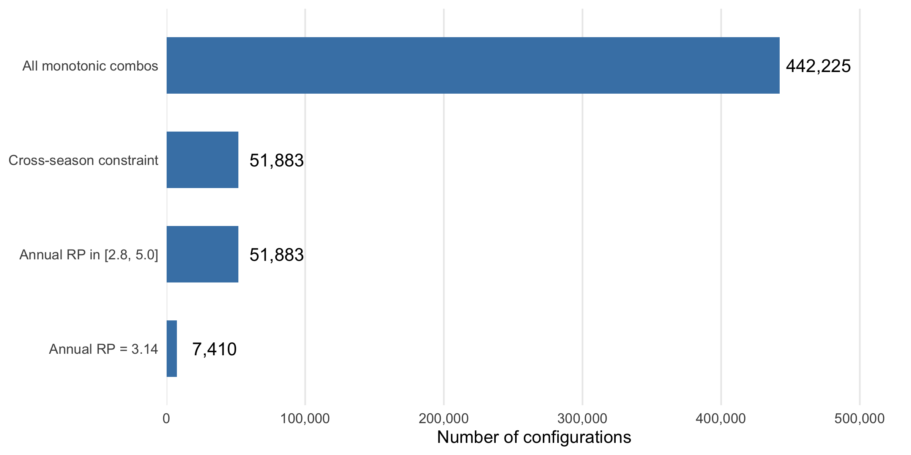
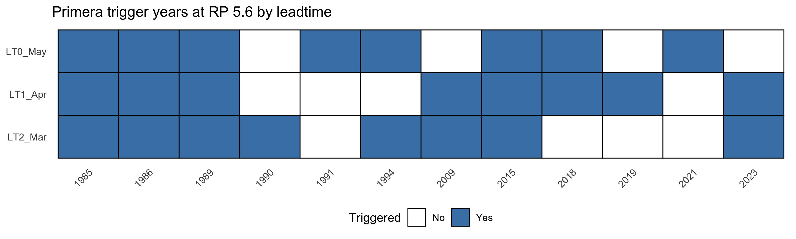
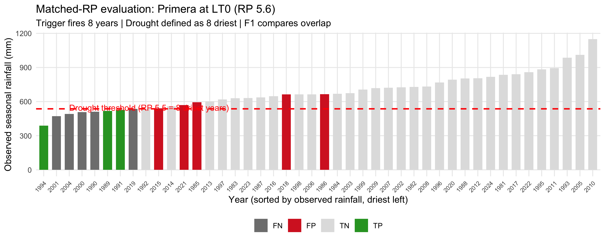
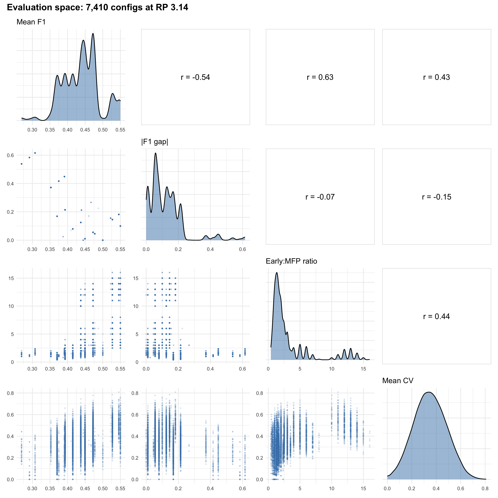
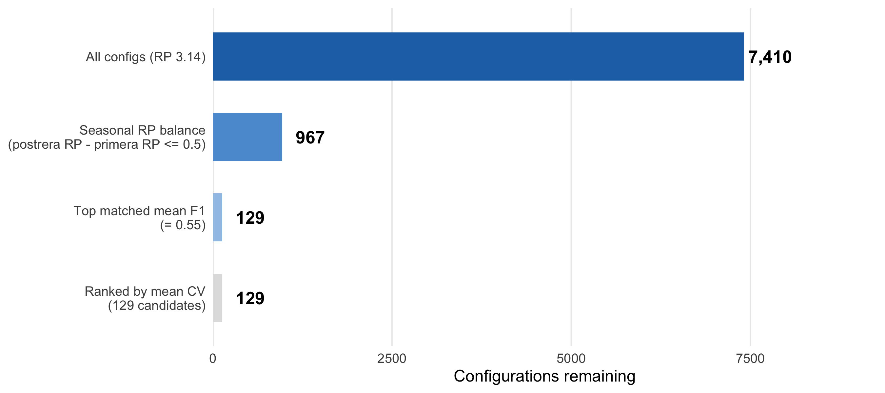
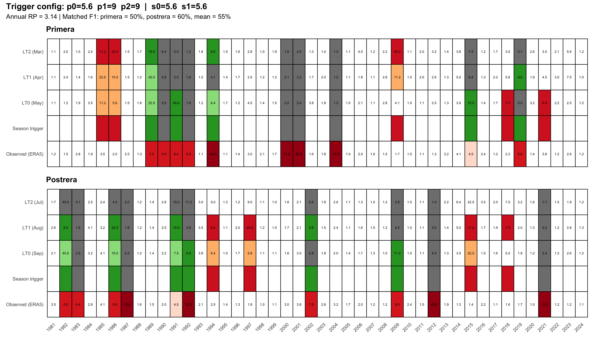
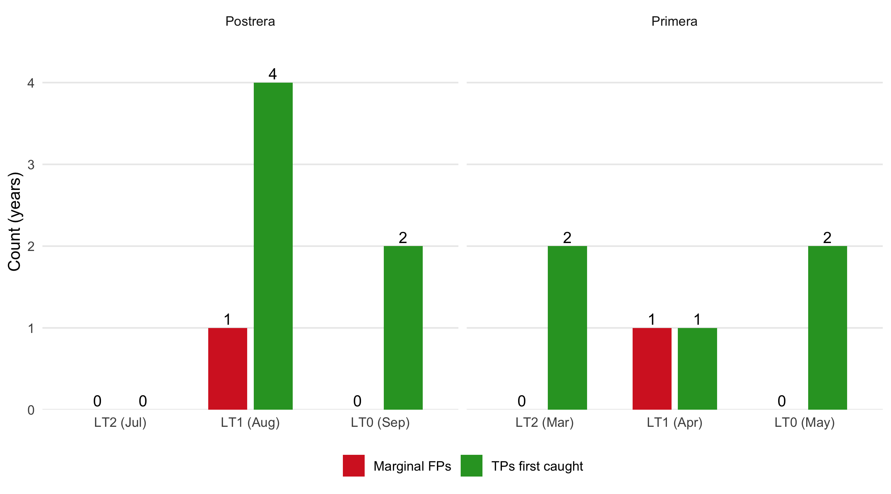

| Available RP threshold options | ||
| Rank | Return Period | Trigger years (of 44) |
|---|---|---|
| 3 | 15.00 | 3 |
| 4 | 11.25 | 4 |
| 5 | 9.00 | 5 |
| 6 | 7.50 | 6 |
| 7 | 6.43 | 7 |
| 8 | 5.62 | 8 |
| 9 | 5.00 | 9 |
| 10 | 4.50 | 10 |
| 11 | 4.09 | 11 |
| 12 | 3.75 | 12 |
| 13 | 3.46 | 13 |
| 14 | 3.21 | 14 |
| 15 | 3.00 | 15 |
| 16 | 2.81 | 16 |
10 Honduras Trigger Configuration
10.1 Overview
Chapter Chapter 9 identified optimal forecast thresholds under the constraint that a single set of thresholds must work across all three countries. This chapter relaxes that constraint and performs a Honduras-specific optimization, allowing thresholds to vary independently across leadtimes and seasons for the Honduras AOI (departments El Paraíso, HN07 and Francisco Morazán, HN08).
The key methodological advance is the matched return period approach: rather than defining drought at a fixed RP (e.g., RP4 = 11 driest years), we define drought at each season to match the number of years that season’s trigger actually fires. This asks a fairer question: “Given that you trigger N times, are you triggering on the N worst years?”
10.2 Grid Search Methodology
10.2.1 Search Space Construction
The trigger system uses ECMWF SEAS5 seasonal rainfall forecasts at multiple leadtimes. For each season, up to 3 leadtimes are available:
| Season | LT0 (latest) | LT1 | LT2 (earliest) |
|---|---|---|---|
| Primera (May-Aug) | May forecast | April forecast | March forecast |
| Postrera (Sep-Nov) | September forecast | August forecast | July forecast |
Each leadtime is assigned an RP threshold from the empirical distribution of 44 years (1981-2024). With 44 years, the possible empirical return periods are \((N+1)/\text{rank}\):
10.2.2 Constraints
The grid search applies two key constraints:
Monotonic within season: Earlier leadtimes must use thresholds at least as stringent (higher RP) as later leadtimes. Since earlier forecasts are less reliable, we require higher confidence to trigger early: \(\text{LT0} \leq \text{LT1} \leq \text{LT2}\)
Cross-season monotonicity: The minimum postrera threshold must be at least as stringent as the minimum primera threshold: \(\min(\text{postrera thresholds}) \geq \min(\text{primera thresholds})\)
Annual RP target: The combined annual return period (based on unique trigger years across both seasons via OR-logic) must fall within [2.8, 5.0] years.
10.2.3 Search Space Reduction

The grid search produces 442,225 monotonic threshold combinations. After applying the cross-season constraint and filtering to annual RP in [2.8, 5.0], 51,883 configurations remain. We focus on the RP 3.14 target (44 years / 14 trigger years), which yields 7,410 unique configurations.
10.3 Trigger Mechanics
10.3.1 OR-Logic
Within each season, the trigger fires if any leadtime’s forecast falls below its RP threshold. A season’s trigger years are the union across all its leadtimes:
\[\text{Season triggers year } y \iff \exists \text{ LT } \in \{0, 1, 2\}: \text{forecast}_{\text{LT}}(y) \leq \text{threshold}_{\text{LT}}\]
At the annual level, a year counts as “triggered” if either season fires.
10.3.2 Different Leadtimes Catch Different Years
A critical insight: different leadtimes are different forecasts issued at different times. Even at the same RP threshold, they do not necessarily trigger the same years. Within the same leadtime, a more stringent RP produces a strict subset of a less stringent RP’s trigger years. But across leadtimes, the sets can differ substantially.

10.4 Matched Return Period Evaluation
10.4.1 The Problem with Fixed Drought Definitions
In Chapter 9, drought was defined at a fixed RP4 threshold (11 driest years out of 44) regardless of how many years a config triggers. This creates a structural bias:
- A config triggering 7 years can catch at most 7 of 11 drought years (recall capped at 64%)
- A config triggering 15 years mechanically catches more drought years but accumulates more false positives
10.4.2 The Matched Approach
Instead, we define drought per season to match the trigger frequency. If a config’s primera triggers 10 years, we define primera drought as the 10 driest observed (ERA5) years. This asks: “Of all the years you could have triggered on, did you pick the driest ones?”

10.5 Multi-Dimensional Evaluation
With 7,410 configurations at RP 3.14, we evaluate each across four dimensions:
| Dimension | Goal | Description |
|---|---|---|
| Mean F1 | Higher = better | Average F1 across primera and postrera (matched RP) |
| |F1 gap| | Lower = better | Balance between seasons — avoid configs that sacrifice one season |
| Early:MFP ratio | Higher = better | Early warning TPs per marginal false positive added by earlier leadtimes |
| Threshold CV | Lower = better | Mean coefficient of variation of thresholds within each season |

10.6 Filtering Pipeline
We apply a sequential filtering pipeline to narrow from 7,410 configs to the top candidates:

10.6.1 Filter 1: Seasonal RP Balance
We require that postrera’s combined seasonal RP is no more than 0.5 higher than primera’s — both seasons should trigger at a similar frequency. This removes configs that are heavily biased toward one season.
Top contenders after this filter:
| Top 5 of 967 configs (by mean F1) | ||||||||||
| p0 | p1 | p2 | s0 | s1 | s2 | mean_f1 | primera_f1 | postrera_f1 | rp_diff | mean_cv |
|---|---|---|---|---|---|---|---|---|---|---|
| 5.625 | 9 | 9.00 | 5.625 | 5.625 | NA | 0.55 | 0.50 | 0.60 | 0.000 | 0.124 |
| 5.000 | 9 | 9.00 | 5.625 | 5.625 | NA | 0.55 | 0.50 | 0.60 | 0.000 | 0.151 |
| 5.625 | 9 | NA | 5.625 | 5.625 | NA | 0.55 | 0.50 | 0.60 | 0.000 | 0.163 |
| 5.625 | 9 | 11.25 | 5.625 | 5.625 | NA | 0.55 | 0.50 | 0.60 | 0.000 | 0.164 |
| 5.000 | 9 | 11.25 | 5.625 | 5.625 | NA | 0.55 | 0.50 | 0.60 | 0.000 | 0.188 |
10.6.2 Filter 2: Highest Matched Mean F1
Among balanced configs, we select those achieving the maximum mean F1 score of 0.55 (primera F1 = 0.50, postrera F1 = 0.60).
Top contenders after this filter:
| Top 5 of 129 configs (by lowest CV) | ||||||||||
| p0 | p1 | p2 | s0 | s1 | s2 | mean_f1 | mean_cv | rp_diff | p_seasonal_rp | s_seasonal_rp |
|---|---|---|---|---|---|---|---|---|---|---|
| 5.625 | 9 | 9.00 | 5.625 | 5.625 | NA | 0.55 | 0.124 | 0.000 | 4.4 | 4.4 |
| 5.000 | 9 | 9.00 | 5.625 | 5.625 | NA | 0.55 | 0.151 | 0.000 | 4.4 | 4.4 |
| 5.625 | 9 | NA | 5.625 | 5.625 | NA | 0.55 | 0.163 | 0.000 | 4.4 | 4.4 |
| 5.625 | 9 | 11.25 | 5.625 | 5.625 | NA | 0.55 | 0.164 | 0.000 | 4.4 | 4.4 |
| 5.000 | 9 | 11.25 | 5.625 | 5.625 | NA | 0.55 | 0.188 | 0.000 | 4.4 | 4.4 |
10.6.3 Ranking: Threshold Uniformity (Mean CV)
Among the 129 tied-F1 configs, we rank by mean coefficient of variation of thresholds within each season. Lower CV means the thresholds are more similar across leadtimes, which is operationally simpler. All candidates share the same primera thresholds and postrera LT0/LT1 — they differ only in the postrera LT2 (July) threshold.
10.7 Candidate Configurations
| Candidate configurations (ranked by mean CV) | ||||||||||||||
| All share mean F1 = 0.55 | Sorted by threshold uniformity | ||||||||||||||
| p0 | p1 | p2 | s0 | s1 | s2 | mean_f1 | primera_f1 | postrera_f1 | p_seasonal_rp | s_seasonal_rp | annual_rp | mean_cv | total_early_tp | total_marginal_fp |
|---|---|---|---|---|---|---|---|---|---|---|---|---|---|---|
| 5.625 | 9.00 | 9.00 | 5.625 | 5.625000 | — | 0.55 | 0.5 | 0.6 | 4.4 | 4.4 | 3.14 | 0.124 | 7 | 2 |
| 5.000 | 9.00 | 9.00 | 5.625 | 5.625000 | — | 0.55 | 0.5 | 0.6 | 4.4 | 4.4 | 3.14 | 0.151 | 7 | 2 |
| 5.625 | 9.00 | NA | 5.625 | 5.625000 | — | 0.55 | 0.5 | 0.6 | 4.4 | 4.4 | 3.14 | 0.163 | 6 | 2 |
| 5.625 | 9.00 | 11.25 | 5.625 | 5.625000 | — | 0.55 | 0.5 | 0.6 | 4.4 | 4.4 | 3.14 | 0.164 | 6 | 2 |
| 5.000 | 9.00 | 11.25 | 5.625 | 5.625000 | — | 0.55 | 0.5 | 0.6 | 4.4 | 4.4 | 3.14 | 0.188 | 6 | 2 |
| 5.000 | 9.00 | 9.00 | 5.000 | 5.625000 | — | 0.55 | 0.5 | 0.6 | 4.4 | 4.4 | 3.14 | 0.192 | 7 | 1 |
| 5.000 | 11.25 | 11.25 | 5.625 | 5.625000 | — | 0.55 | 0.5 | 0.6 | 4.4 | 4.4 | 3.14 | 0.197 | 5 | 2 |
| 5.000 | 9.00 | NA | 5.625 | 5.625000 | — | 0.55 | 0.5 | 0.6 | 4.4 | 4.4 | 3.14 | 0.202 | 6 | 2 |
| 5.625 | 9.00 | 9.00 | 5.625 | 5.625000 | 7.5 | 0.55 | 0.5 | 0.6 | 4.4 | 4.4 | 3.14 | 0.210 | 8 | 2 |
| 5.000 | 9.00 | 11.25 | 5.000 | 5.625000 | — | 0.55 | 0.5 | 0.6 | 4.4 | 4.4 | 3.14 | 0.230 | 6 | 1 |
| 5.000 | 9.00 | 9.00 | 5.625 | 5.625000 | 7.5 | 0.55 | 0.5 | 0.6 | 4.4 | 4.4 | 3.14 | 0.237 | 8 | 2 |
| 5.000 | 11.25 | 11.25 | 5.000 | 5.625000 | — | 0.55 | 0.5 | 0.6 | 4.4 | 4.4 | 3.14 | 0.238 | 5 | 1 |
| 5.625 | 9.00 | 15.00 | 5.625 | 5.625000 | — | 0.55 | 0.5 | 0.6 | 4.4 | 4.4 | 3.14 | 0.240 | 6 | 2 |
| 5.000 | 11.25 | 15.00 | 5.625 | 5.625000 | — | 0.55 | 0.5 | 0.6 | 4.4 | 4.4 | 3.14 | 0.242 | 5 | 2 |
| 5.000 | 9.00 | NA | 5.000 | 5.625000 | — | 0.55 | 0.5 | 0.6 | 4.4 | 4.4 | 3.14 | 0.244 | 6 | 1 |
| 5.000 | 15.00 | 15.00 | 5.625 | 5.625000 | — | 0.55 | 0.5 | 0.6 | 4.4 | 4.4 | 3.14 | 0.247 | 5 | 2 |
| 5.625 | 9.00 | NA | 5.625 | 5.625000 | 7.5 | 0.55 | 0.5 | 0.6 | 4.4 | 4.4 | 3.14 | 0.250 | 7 | 2 |
| 5.625 | 9.00 | 11.25 | 5.625 | 5.625000 | 7.5 | 0.55 | 0.5 | 0.6 | 4.4 | 4.4 | 3.14 | 0.251 | 7 | 2 |
| 5.000 | 9.00 | 9.00 | 5.000 | 5.625000 | 7.5 | 0.55 | 0.5 | 0.6 | 4.4 | 4.4 | 3.14 | 0.258 | 8 | 1 |
| 5.000 | 9.00 | 15.00 | 5.625 | 5.625000 | — | 0.55 | 0.5 | 0.6 | 4.4 | 4.4 | 3.14 | 0.260 | 6 | 2 |
| 5.625 | 9.00 | 9.00 | 5.625 | 5.625000 | 9.0 | 0.55 | 0.5 | 0.6 | 4.4 | 4.4 | 3.14 | 0.268 | 8 | 2 |
| 5.000 | 11.25 | NA | 5.625 | 5.625000 | — | 0.55 | 0.5 | 0.6 | 4.4 | 4.4 | 3.14 | 0.272 | 5 | 2 |
| 5.000 | 9.00 | 11.25 | 5.625 | 5.625000 | 7.5 | 0.55 | 0.5 | 0.6 | 4.4 | 4.4 | 3.14 | 0.275 | 7 | 2 |
| 5.000 | 11.25 | 11.25 | 5.625 | 5.625000 | 7.5 | 0.55 | 0.5 | 0.6 | 4.4 | 4.4 | 3.14 | 0.283 | 6 | 2 |
| 5.000 | 11.25 | 15.00 | 5.000 | 5.625000 | — | 0.55 | 0.5 | 0.6 | 4.4 | 4.4 | 3.14 | 0.284 | 5 | 1 |
| 5.000 | 9.00 | NA | 5.625 | 5.625000 | 7.5 | 0.55 | 0.5 | 0.6 | 4.4 | 4.4 | 3.14 | 0.289 | 7 | 2 |
| 5.000 | 15.00 | 15.00 | 5.000 | 5.625000 | — | 0.55 | 0.5 | 0.6 | 4.4 | 4.4 | 3.14 | 0.289 | 5 | 1 |
| 5.000 | 9.00 | 9.00 | 5.625 | 5.625000 | 9.0 | 0.55 | 0.5 | 0.6 | 4.4 | 4.4 | 3.14 | 0.295 | 8 | 2 |
| 5.000 | 9.00 | 11.25 | 5.000 | 5.625000 | 7.5 | 0.55 | 0.5 | 0.6 | 4.4 | 4.4 | 3.14 | 0.296 | 7 | 1 |
| 5.000 | 9.00 | 15.00 | 5.000 | 5.625000 | — | 0.55 | 0.5 | 0.6 | 4.4 | 4.4 | 3.14 | 0.302 | 6 | 1 |
| 5.000 | 11.25 | 11.25 | 5.000 | 5.625000 | 7.5 | 0.55 | 0.5 | 0.6 | 4.4 | 4.4 | 3.14 | 0.304 | 6 | 1 |
| 5.625 | 9.00 | NA | 5.625 | 5.625000 | 9.0 | 0.55 | 0.5 | 0.6 | 4.4 | 4.4 | 3.14 | 0.308 | 7 | 2 |
| 5.625 | 9.00 | 11.25 | 5.625 | 5.625000 | 9.0 | 0.55 | 0.5 | 0.6 | 4.4 | 4.4 | 3.14 | 0.308 | 7 | 2 |
| 5.000 | 9.00 | NA | 5.000 | 5.625000 | 7.5 | 0.55 | 0.5 | 0.6 | 4.4 | 4.4 | 3.14 | 0.310 | 7 | 1 |
| 5.000 | 11.25 | NA | 5.000 | 5.625000 | — | 0.55 | 0.5 | 0.6 | 4.4 | 4.4 | 3.14 | 0.314 | 5 | 1 |
| 5.000 | 9.00 | 9.00 | 5.000 | 5.625000 | 9.0 | 0.55 | 0.5 | 0.6 | 4.4 | 4.4 | 3.14 | 0.315 | 8 | 1 |
| 5.625 | 9.00 | 15.00 | 5.625 | 5.625000 | 7.5 | 0.55 | 0.5 | 0.6 | 4.4 | 4.4 | 3.14 | 0.327 | 7 | 2 |
| 5.000 | 11.25 | 15.00 | 5.625 | 5.625000 | 7.5 | 0.55 | 0.5 | 0.6 | 4.4 | 4.4 | 3.14 | 0.329 | 6 | 2 |
| 5.000 | 9.00 | 11.25 | 5.625 | 5.625000 | 9.0 | 0.55 | 0.5 | 0.6 | 4.4 | 4.4 | 3.14 | 0.332 | 7 | 2 |
| 5.000 | 15.00 | 15.00 | 5.625 | 5.625000 | 7.5 | 0.55 | 0.5 | 0.6 | 4.4 | 4.4 | 3.14 | 0.334 | 6 | 2 |
| 5.625 | 9.00 | 9.00 | 5.625 | 5.625000 | 11.2 | 0.55 | 0.5 | 0.6 | 4.4 | 4.4 | 3.14 | 0.340 | 8 | 2 |
| 5.000 | 11.25 | 11.25 | 5.625 | 5.625000 | 9.0 | 0.55 | 0.5 | 0.6 | 4.4 | 4.4 | 3.14 | 0.341 | 6 | 2 |
| 5.000 | 9.00 | NA | 5.625 | 5.625000 | 9.0 | 0.55 | 0.5 | 0.6 | 4.4 | 4.4 | 3.14 | 0.346 | 7 | 2 |
| 5.000 | 9.00 | 15.00 | 5.625 | 5.625000 | 7.5 | 0.55 | 0.5 | 0.6 | 4.4 | 4.4 | 3.14 | 0.347 | 7 | 2 |
| 5.000 | 11.25 | 15.00 | 5.000 | 5.625000 | 7.5 | 0.55 | 0.5 | 0.6 | 4.4 | 4.4 | 3.14 | 0.350 | 6 | 1 |
| 5.000 | 9.00 | 11.25 | 5.000 | 5.625000 | 9.0 | 0.55 | 0.5 | 0.6 | 4.4 | 4.4 | 3.14 | 0.353 | 7 | 1 |
| 5.000 | 15.00 | 15.00 | 5.000 | 5.625000 | 7.5 | 0.55 | 0.5 | 0.6 | 4.4 | 4.4 | 3.14 | 0.355 | 6 | 1 |
| 5.000 | 11.25 | NA | 5.625 | 5.625000 | 7.5 | 0.55 | 0.5 | 0.6 | 4.4 | 4.4 | 3.14 | 0.359 | 6 | 2 |
| 5.000 | 11.25 | 11.25 | 5.000 | 5.625000 | 9.0 | 0.55 | 0.5 | 0.6 | 4.4 | 4.4 | 3.14 | 0.361 | 6 | 1 |
| 5.000 | 9.00 | NA | 5.000 | 5.625000 | 9.0 | 0.55 | 0.5 | 0.6 | 4.4 | 4.4 | 3.14 | 0.366 | 7 | 1 |
| 5.000 | 9.00 | 9.00 | 5.625 | 5.625000 | 11.2 | 0.55 | 0.5 | 0.6 | 4.4 | 4.4 | 3.14 | 0.367 | 8 | 2 |
| 5.000 | 9.00 | 15.00 | 5.000 | 5.625000 | 7.5 | 0.55 | 0.5 | 0.6 | 4.4 | 4.4 | 3.14 | 0.368 | 7 | 1 |
| 5.000 | 11.25 | NA | 5.000 | 5.625000 | 7.5 | 0.55 | 0.5 | 0.6 | 4.4 | 4.4 | 3.14 | 0.380 | 6 | 1 |
| 5.625 | 9.00 | NA | 5.625 | 5.625000 | 11.2 | 0.55 | 0.5 | 0.6 | 4.4 | 4.4 | 3.14 | 0.380 | 7 | 2 |
| 5.625 | 9.00 | 11.25 | 5.625 | 5.625000 | 11.2 | 0.55 | 0.5 | 0.6 | 4.4 | 4.4 | 3.14 | 0.381 | 7 | 2 |
| 4.500 | 15.00 | NA | 5.625 | 5.625000 | — | 0.55 | 0.5 | 0.6 | 4.4 | 4.4 | 3.14 | 0.381 | 5 | 1 |
| 5.625 | 9.00 | 15.00 | 5.625 | 5.625000 | 9.0 | 0.55 | 0.5 | 0.6 | 4.4 | 4.4 | 3.14 | 0.385 | 7 | 2 |
| 5.000 | 9.00 | 9.00 | 5.000 | 5.625000 | 11.2 | 0.55 | 0.5 | 0.6 | 4.4 | 4.4 | 3.14 | 0.387 | 8 | 1 |
| 5.000 | 11.25 | 15.00 | 5.625 | 5.625000 | 9.0 | 0.55 | 0.5 | 0.6 | 4.4 | 4.4 | 3.14 | 0.387 | 6 | 2 |
| 5.000 | 15.00 | 15.00 | 5.625 | 5.625000 | 9.0 | 0.55 | 0.5 | 0.6 | 4.4 | 4.4 | 3.14 | 0.392 | 6 | 2 |
| 5.000 | 9.00 | 11.25 | 5.625 | 5.625000 | 11.2 | 0.55 | 0.5 | 0.6 | 4.4 | 4.4 | 3.14 | 0.405 | 7 | 2 |
| 5.000 | 9.00 | 15.00 | 5.625 | 5.625000 | 9.0 | 0.55 | 0.5 | 0.6 | 4.4 | 4.4 | 3.14 | 0.405 | 7 | 2 |
| 5.000 | 11.25 | 15.00 | 5.000 | 5.625000 | 9.0 | 0.55 | 0.5 | 0.6 | 4.4 | 4.4 | 3.14 | 0.407 | 6 | 1 |
| 5.000 | 15.00 | 15.00 | 5.000 | 5.625000 | 9.0 | 0.55 | 0.5 | 0.6 | 4.4 | 4.4 | 3.14 | 0.412 | 6 | 1 |
| 5.000 | 11.25 | 11.25 | 5.625 | 5.625000 | 11.2 | 0.55 | 0.5 | 0.6 | 4.4 | 4.4 | 3.14 | 0.413 | 6 | 2 |
| 5.000 | 11.25 | NA | 5.625 | 5.625000 | 9.0 | 0.55 | 0.5 | 0.6 | 4.4 | 4.4 | 3.14 | 0.416 | 6 | 2 |
| 5.000 | 9.00 | NA | 5.625 | 5.625000 | 11.2 | 0.55 | 0.5 | 0.6 | 4.4 | 4.4 | 3.14 | 0.419 | 7 | 2 |
| 4.500 | 15.00 | NA | 5.000 | 5.625000 | — | 0.55 | 0.5 | 0.6 | 4.4 | 4.4 | 3.14 | 0.422 | 5 | 0 |
| 5.000 | 9.00 | 11.25 | 5.000 | 5.625000 | 11.2 | 0.55 | 0.5 | 0.6 | 4.4 | 4.4 | 3.14 | 0.424 | 7 | 1 |
| 5.000 | 9.00 | 15.00 | 5.000 | 5.625000 | 9.0 | 0.55 | 0.5 | 0.6 | 4.4 | 4.4 | 3.14 | 0.425 | 7 | 1 |
| 5.000 | 11.25 | 11.25 | 5.000 | 5.625000 | 11.2 | 0.55 | 0.5 | 0.6 | 4.4 | 4.4 | 3.14 | 0.433 | 6 | 1 |
| 5.625 | 9.00 | 9.00 | 5.625 | 5.625000 | 15.0 | 0.55 | 0.5 | 0.6 | 4.4 | 4.4 | 3.14 | 0.433 | 7 | 2 |
| 5.000 | 11.25 | NA | 5.000 | 5.625000 | 9.0 | 0.55 | 0.5 | 0.6 | 4.4 | 4.4 | 3.14 | 0.436 | 6 | 1 |
| 5.000 | 9.00 | NA | 5.000 | 5.625000 | 11.2 | 0.55 | 0.5 | 0.6 | 4.4 | 4.4 | 3.14 | 0.438 | 7 | 1 |
| 5.625 | 9.00 | 15.00 | 5.625 | 5.625000 | 11.2 | 0.55 | 0.5 | 0.6 | 4.4 | 4.4 | 3.14 | 0.457 | 7 | 2 |
| 5.000 | 11.25 | 15.00 | 5.625 | 5.625000 | 11.2 | 0.55 | 0.5 | 0.6 | 4.4 | 4.4 | 3.14 | 0.459 | 6 | 2 |
| 5.000 | 9.00 | 9.00 | 5.625 | 5.625000 | 15.0 | 0.55 | 0.5 | 0.6 | 4.4 | 4.4 | 3.14 | 0.460 | 7 | 2 |
| 5.000 | 15.00 | 15.00 | 5.625 | 5.625000 | 11.2 | 0.55 | 0.5 | 0.6 | 4.4 | 4.4 | 3.14 | 0.464 | 6 | 2 |
| 4.500 | 15.00 | NA | 5.625 | 5.625000 | 7.5 | 0.55 | 0.5 | 0.6 | 4.4 | 4.4 | 3.14 | 0.467 | 6 | 1 |
| 5.625 | 9.00 | NA | 5.625 | 5.625000 | 15.0 | 0.55 | 0.5 | 0.6 | 4.4 | 4.4 | 3.14 | 0.472 | 6 | 2 |
| 5.625 | 9.00 | 11.25 | 5.625 | 5.625000 | 15.0 | 0.55 | 0.5 | 0.6 | 4.4 | 4.4 | 3.14 | 0.473 | 6 | 2 |
| 5.000 | 9.00 | 15.00 | 5.625 | 5.625000 | 11.2 | 0.55 | 0.5 | 0.6 | 4.4 | 4.4 | 3.14 | 0.477 | 7 | 2 |
| 5.000 | 9.00 | 9.00 | 5.000 | 5.625000 | 15.0 | 0.55 | 0.5 | 0.6 | 4.4 | 4.4 | 3.14 | 0.479 | 7 | 1 |
| 5.000 | 11.25 | 15.00 | 5.000 | 5.625000 | 11.2 | 0.55 | 0.5 | 0.6 | 4.4 | 4.4 | 3.14 | 0.479 | 6 | 1 |
| 5.000 | 15.00 | 15.00 | 5.000 | 5.625000 | 11.2 | 0.55 | 0.5 | 0.6 | 4.4 | 4.4 | 3.14 | 0.483 | 6 | 1 |
| 4.500 | 15.00 | NA | 5.000 | 5.625000 | 7.5 | 0.55 | 0.5 | 0.6 | 4.4 | 4.4 | 3.14 | 0.488 | 6 | 0 |
| 5.000 | 11.25 | NA | 5.625 | 5.625000 | 11.2 | 0.55 | 0.5 | 0.6 | 4.4 | 4.4 | 3.14 | 0.488 | 6 | 2 |
| 5.000 | 9.00 | 15.00 | 5.000 | 5.625000 | 11.2 | 0.55 | 0.5 | 0.6 | 4.4 | 4.4 | 3.14 | 0.496 | 7 | 1 |
| 5.000 | 9.00 | 11.25 | 5.625 | 5.625000 | 15.0 | 0.55 | 0.5 | 0.6 | 4.4 | 4.4 | 3.14 | 0.497 | 6 | 2 |
| 4.500 | 15.00 | NA | 4.500 | 6.428571 | 7.5 | 0.55 | 0.5 | 0.6 | 4.4 | 4.4 | 3.14 | 0.504 | 5 | 0 |
| 4.500 | 15.00 | NA | 4.500 | 6.428571 | — | 0.55 | 0.5 | 0.6 | 4.4 | 4.4 | 3.14 | 0.506 | 4 | 0 |
| 5.000 | 11.25 | 11.25 | 5.625 | 5.625000 | 15.0 | 0.55 | 0.5 | 0.6 | 4.4 | 4.4 | 3.14 | 0.506 | 5 | 2 |
| 5.000 | 11.25 | NA | 5.000 | 5.625000 | 11.2 | 0.55 | 0.5 | 0.6 | 4.4 | 4.4 | 3.14 | 0.508 | 6 | 1 |
| 5.000 | 9.00 | NA | 5.625 | 5.625000 | 15.0 | 0.55 | 0.5 | 0.6 | 4.4 | 4.4 | 3.14 | 0.511 | 6 | 2 |
| 4.500 | 15.00 | NA | 4.500 | 7.500000 | 7.5 | 0.55 | 0.5 | 0.6 | 4.4 | 4.4 | 3.14 | 0.514 | 5 | 0 |
| 5.000 | 9.00 | 11.25 | 5.000 | 5.625000 | 15.0 | 0.55 | 0.5 | 0.6 | 4.4 | 4.4 | 3.14 | 0.516 | 6 | 1 |
| 5.000 | 11.25 | 11.25 | 5.000 | 5.625000 | 15.0 | 0.55 | 0.5 | 0.6 | 4.4 | 4.4 | 3.14 | 0.525 | 5 | 1 |
| 4.500 | 15.00 | NA | 5.625 | 5.625000 | 9.0 | 0.55 | 0.5 | 0.6 | 4.4 | 4.4 | 3.14 | 0.525 | 6 | 1 |
| 5.000 | 9.00 | NA | 5.000 | 5.625000 | 15.0 | 0.55 | 0.5 | 0.6 | 4.4 | 4.4 | 3.14 | 0.530 | 6 | 1 |
| 4.500 | 15.00 | NA | 4.500 | 7.500000 | 9.0 | 0.55 | 0.5 | 0.6 | 4.4 | 4.4 | 3.14 | 0.544 | 5 | 0 |
| 4.500 | 15.00 | NA | 5.000 | 5.625000 | 9.0 | 0.55 | 0.5 | 0.6 | 4.4 | 4.4 | 3.14 | 0.545 | 6 | 0 |
| 5.625 | 9.00 | 15.00 | 5.625 | 5.625000 | 15.0 | 0.55 | 0.5 | 0.6 | 4.4 | 4.4 | 3.14 | 0.550 | 6 | 2 |
| 4.500 | 15.00 | NA | 4.500 | 6.428571 | 9.0 | 0.55 | 0.5 | 0.6 | 4.4 | 4.4 | 3.14 | 0.551 | 5 | 0 |
| 5.000 | 11.25 | 15.00 | 5.625 | 5.625000 | 15.0 | 0.55 | 0.5 | 0.6 | 4.4 | 4.4 | 3.14 | 0.552 | 5 | 2 |
| 4.500 | 15.00 | NA | 4.500 | 9.000000 | 9.0 | 0.55 | 0.5 | 0.6 | 4.4 | 4.4 | 3.14 | 0.554 | 5 | 0 |
| 5.000 | 15.00 | 15.00 | 5.625 | 5.625000 | 15.0 | 0.55 | 0.5 | 0.6 | 4.4 | 4.4 | 3.14 | 0.557 | 5 | 2 |
| 4.500 | 15.00 | NA | 4.500 | 7.500000 | — | 0.55 | 0.5 | 0.6 | 4.4 | 4.4 | 3.14 | 0.558 | 4 | 0 |
| 5.000 | 9.00 | 15.00 | 5.625 | 5.625000 | 15.0 | 0.55 | 0.5 | 0.6 | 4.4 | 4.4 | 3.14 | 0.570 | 6 | 2 |
| 5.000 | 11.25 | 15.00 | 5.000 | 5.625000 | 15.0 | 0.55 | 0.5 | 0.6 | 4.4 | 4.4 | 3.14 | 0.570 | 5 | 1 |
| 5.000 | 15.00 | 15.00 | 5.000 | 5.625000 | 15.0 | 0.55 | 0.5 | 0.6 | 4.4 | 4.4 | 3.14 | 0.575 | 5 | 1 |
| 5.000 | 11.25 | NA | 5.625 | 5.625000 | 15.0 | 0.55 | 0.5 | 0.6 | 4.4 | 4.4 | 3.14 | 0.581 | 5 | 2 |
| 5.000 | 9.00 | 15.00 | 5.000 | 5.625000 | 15.0 | 0.55 | 0.5 | 0.6 | 4.4 | 4.4 | 3.14 | 0.588 | 6 | 1 |
| 4.500 | 15.00 | NA | 4.500 | 9.000000 | 11.2 | 0.55 | 0.5 | 0.6 | 4.4 | 4.4 | 3.14 | 0.589 | 5 | 0 |
| 4.500 | 15.00 | NA | 5.625 | 5.625000 | 11.2 | 0.55 | 0.5 | 0.6 | 4.4 | 4.4 | 3.14 | 0.597 | 6 | 1 |
| 4.500 | 15.00 | NA | 4.500 | 11.250000 | 11.2 | 0.55 | 0.5 | 0.6 | 4.4 | 4.4 | 3.14 | 0.597 | 5 | 0 |
| 4.500 | 15.00 | NA | 4.500 | 7.500000 | 11.2 | 0.55 | 0.5 | 0.6 | 4.4 | 4.4 | 3.14 | 0.599 | 5 | 0 |
| 5.000 | 11.25 | NA | 5.000 | 5.625000 | 15.0 | 0.55 | 0.5 | 0.6 | 4.4 | 4.4 | 3.14 | 0.600 | 5 | 1 |
| 4.500 | 15.00 | NA | 4.500 | 6.428571 | 11.2 | 0.55 | 0.5 | 0.6 | 4.4 | 4.4 | 3.14 | 0.616 | 5 | 0 |
| 4.500 | 15.00 | NA | 4.500 | 9.000000 | — | 0.55 | 0.5 | 0.6 | 4.4 | 4.4 | 3.14 | 0.616 | 4 | 0 |
| 4.500 | 15.00 | NA | 5.000 | 5.625000 | 11.2 | 0.55 | 0.5 | 0.6 | 4.4 | 4.4 | 3.14 | 0.617 | 6 | 0 |
| 4.500 | 15.00 | NA | 4.500 | 11.250000 | 15.0 | 0.55 | 0.5 | 0.6 | 4.4 | 4.4 | 3.14 | 0.640 | 4 | 0 |
| 4.500 | 15.00 | NA | 4.500 | 15.000000 | 15.0 | 0.55 | 0.5 | 0.6 | 4.4 | 4.4 | 3.14 | 0.644 | 4 | 0 |
| 4.500 | 15.00 | NA | 4.500 | 9.000000 | 15.0 | 0.55 | 0.5 | 0.6 | 4.4 | 4.4 | 3.14 | 0.658 | 4 | 0 |
| 4.500 | 15.00 | NA | 4.500 | 7.500000 | 15.0 | 0.55 | 0.5 | 0.6 | 4.4 | 4.4 | 3.14 | 0.681 | 4 | 0 |
| 4.500 | 15.00 | NA | 4.500 | 11.250000 | — | 0.55 | 0.5 | 0.6 | 4.4 | 4.4 | 3.14 | 0.684 | 3 | 0 |
| 4.500 | 15.00 | NA | 5.625 | 5.625000 | 15.0 | 0.55 | 0.5 | 0.6 | 4.4 | 4.4 | 3.14 | 0.690 | 5 | 1 |
| 4.500 | 15.00 | NA | 4.500 | 6.428571 | 15.0 | 0.55 | 0.5 | 0.6 | 4.4 | 4.4 | 3.14 | 0.704 | 4 | 0 |
| 4.500 | 15.00 | NA | 5.000 | 5.625000 | 15.0 | 0.55 | 0.5 | 0.6 | 4.4 | 4.4 | 3.14 | 0.709 | 5 | 0 |
| 4.500 | 15.00 | NA | 4.500 | 15.000000 | — | 0.55 | 0.5 | 0.6 | 4.4 | 4.4 | 3.14 | 0.761 | 3 | 0 |
| Annual RP = 3.14 (trigger in 14 of 44 years) | ||||||||||||||
The lowest CV candidate with postrera LT2 included:
| Best candidate with postrera LT2 (July) included | ||||||||||||||
| p0 | p1 | p2 | s0 | s1 | s2 | mean_f1 | primera_f1 | postrera_f1 | p_seasonal_rp | s_seasonal_rp | annual_rp | mean_cv | total_early_tp | total_marginal_fp |
|---|---|---|---|---|---|---|---|---|---|---|---|---|---|---|
| 5.625 | 9 | 9 | 5.625 | 5.625 | 7.5 | 0.55 | 0.5 | 0.6 | 4.4 | 4.4 | 3.14 | 0.21 | 8 | 2 |
The remaining sections illustrate the per-leadtime assessment using the first candidate (lowest CV). The primera and postrera LT0/LT1 results are identical across all candidates — only the postrera LT2 contribution changes.
10.8 Per-Leadtime Value Assessment
The following visualization shows exactly what each leadtime contributes to the trigger system. For every year where something happens (trigger fires or drought observed), we classify each leadtime’s role:
- TP (first caught): This leadtime is the earliest to correctly trigger for a drought year
- TP (already caught): Correctly triggers, but an earlier leadtime already caught it
- FP (marginal): False positive not triggered by any later leadtime — a genuine added cost
- FP (redundant): False positive, but the system would have triggered anyway from a later LT
- FN (missed): Drought year that this leadtime did not trigger
- TN: Not a drought year, not triggered
The bottom rows show the season-level outcome (did any LT fire?) and the observed reality (was it actually a drought year, colored by observed RP severity).

10.9 Confusion Matrix Summary
| Season | Trigger years | Seasonal RP | TP | FP | FN | TN | Precision | Recall | F1 |
|---|---|---|---|---|---|---|---|---|---|
| Primera | 10 | 4.4 | 5 | 5 | 5 | 29 | 50% | 50% | 50% |
| Postrera | 10 | 4.4 | 6 | 4 | 4 | 30 | 60% | 60% | 60% |
10.10 Early Warning Value

10.11 Summary
The Honduras-specific trigger optimization identifies 129 candidate configurations:
- Primera: LT0 = RP 5.6, LT1 = RP 9, LT2 = RP 9
- Postrera: LT0 = RP 5.6, LT1 = RP 5.6
This was selected through a systematic pipeline:
- Grid search over 442,225 monotonic threshold combinations
- Annual RP constraint to 3.14 (trigger in 14 of 44 years) → 7,410 configs
- Seasonal RP balance (postrera RP within 0.5 of primera) → 967 configs
- Maximum matched F1 (= 0.55) → 129 configs
- Ranked by threshold uniformity (mean CV) → 129 candidates
The matched-RP evaluation provides a fairer assessment than fixed-RP F1 (r = 0.26 between the two methods), ensuring configs are not penalized or rewarded simply for triggering more or fewer years.